← 返回阅读库 · 原论文目录
论文讲解阅读文档 · 机器人学 · v132
Implicit Behavioral Cloning IBC[2109.00137]
视频时长 00:06:56；讲解文字 3,331 字符；提取讲解画面 22 张。按视频原顺序阅读，每段文字保留时间戳。
文字来自整段视频的自动语音转写，按自然停顿分段，并与 PPT / 论文页面 / 演示画面对齐。未将讲解压缩为摘要；术语、数字和口述公式请结合画面及原论文核对。 阅读稿已校正规范部分明确术语误识别；原始逐字稿和每处修改记录另行保留。
讲解画面为源视频截图（640×360），不是可编辑 PPT 文件。全片按每秒 2 帧扫描内容变化，逐步展开页保留；连续动画保留代表画面。清晰度受源视频限制。
下载完整资料包 · 含离线 HTML、PDF、Word、全部 PPT 画面和字幕。
原论文与材料
Implicit Behavioral Cloning · 下载完整 PDF（31 页）
按时间阅读
00:00:00–00:00:08 · 画面 001
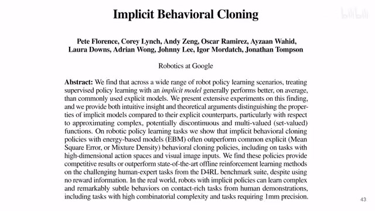
00:00:00–00:00:08 · 画面 001大家好 ，今天我们来快速说一篇论文 Implicit Behavior Cloning ，IBC，这一篇也是一个非常经典的工作。我们直接来看，首先一个快速的回顾，behavior cloning 这个东西就是你有一个专家，他给你一个特定的 observation，给你一个特定的 state，你应该做出什么样的 action，那个专家就告诉你一堆数据集，然后你就让你的 policy 去尝试去学出这个专家出来，这是一个最简单的 imitation learning 的一个构型。
00:00:08–00:01:41 · 画面 002
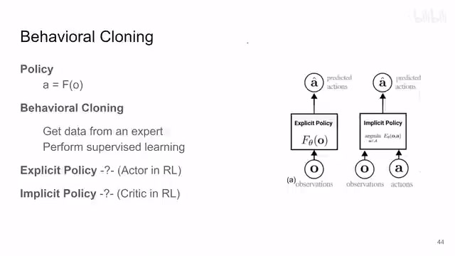
00:00:08–00:01:41 · 画面 002就是完全的 supervised learning，就是让你模型的输出变得跟专家一样就可以了。那么在之前我们用的各种 policy，就是你的模型它是 explicit policy，那就像这个图里演示的一样，给你一个 observation 进来，然后这个模型直接就出来一个 action，就是一个映射从 state 到 action 这么一个过程。那么一个不恰当的比喻就是 reinforcement learning 那个 actor critic 里面的那个 actor。
那本文提出的就是我不要直接去生成一个 action，后面我们会说到它的整种优势，我去学习一个 energy based model，它就是来检测说你当前这个 observation 和 action 它们匹配的关系。那么如果这两个匹配的非常合适，那么它的这个 energy 就很低，那么如果它们不太匹配，那么这个值就很高，通过它来指导你就固定了这个 observation。
不断的去调整你的 action，你调整一下你就看一眼你的这个 energy，那么最终你调整到一个 action 使得这个 energy function 能取到一个最小的值。好，那么这个 action 呢就是我们最终想要的 action，你可以看到它就很像 actor-critic 里面的 critic 的作用。那么这个呢，就是本文的核心的一个思想。那么下面我们稍微具体来看一点，这个模型是怎么训练的。那么我们之前刚刚也说到了，这个 implicit model 它就是有这么一个 score function，把你的 state 和 action 组合起来，最后映射到一个 score，来看它们的匹配的程度。那么本文训练的方法呢，也很直接，就是用了 contrastive learning、InfoNCE 这样一个 loss。那相匹配的这个 state action，那么它们的 score 就应该低
00:01:41–00:01:48 · 画面 003
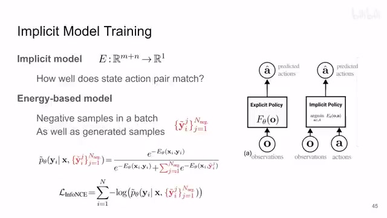
00:01:41–00:01:48 · 画面 00300:01:48–00:02:05 · 画面 004
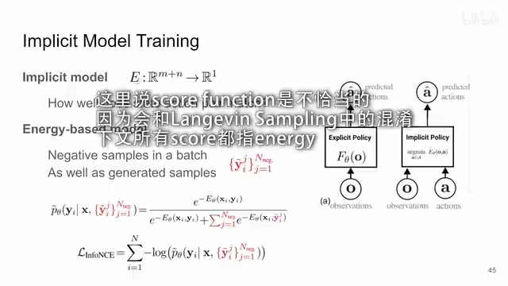
00:01:48–00:02:05 · 画面 00400:02:05–00:02:45 · 画面 005
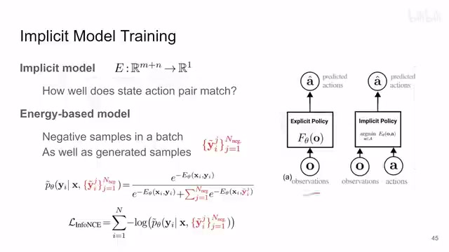
00:02:05–00:02:45 · 画面 005那不匹配的呢，这个 observation 还有这个 negative sample，就是这个它们这个 score 呢或者 energy 呢，它就应该高，这是一个经典的 InfoNCE 的构型。那么这个 negative sample 从哪里来呢？对吧，contrastive learning 的一些东西，你当然可以对吧，经典的从这个 batch 里面其他的这个 sample，那就是都是 negative sample。那么当然你知道你的 action 的一个范围，所以你也可以在这个范围里面随机的。
采样出一些样本出来。那这里写成 sample 的比较好。你在这个范围里面。随机的采出一些样本出来。特有的毫无意义的采样出来的样本。对吧也作为 negative sample那这样子呢你就有了你的训练的机。你按照 InfoNCE 的 loss 去训练就好了。那么到 inference 的时候
00:02:45–00:03:18 · 画面 006
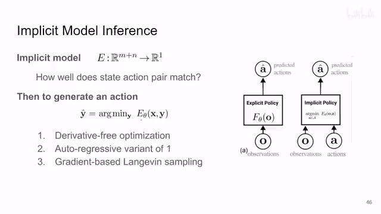
00:02:45–00:03:18 · 画面 006你拿了这个 energy function你就把它当成一个 loss。去做 optimization只不过呢你的 observation 是固定的你要去优化你的 action来让这个 energy function达到最小的一个值。那么这个就是一个最优化的问题。你可以使用这些不依赖导数的最优化的方法。那么当你的 action 的维度。
比较高的时候你可以换成 auto-regressive 的版本。你先优化第一个维度。然后用第二个模型。去优化前两个维度。第三个模型把前三个维度优化起来。这样不断的去叠加。那这样子你就能处理。
00:03:18–00:03:20 · 画面 007
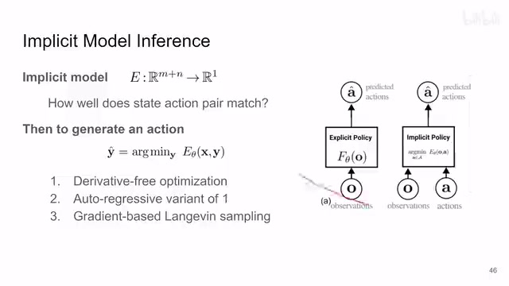
00:03:18–00:03:20 · 画面 007这个 action 维度比较高的情况。
00:03:20–00:03:37 · 画面 008
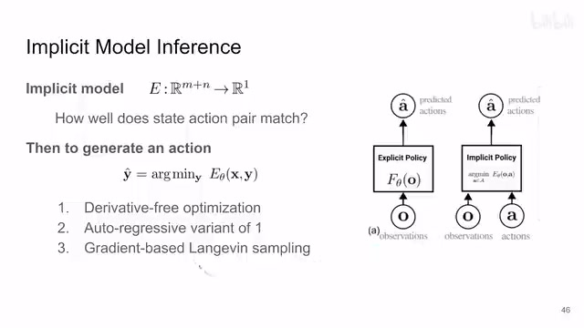
00:03:20–00:03:37 · 画面 008那么当然你也可以用朗之万采样。不要去估计这个 energy function而是去估计它的梯度。根据这个梯度来去更新。你的 action那么这些都是最优化里面。很成熟的技术了你随便拿一款出来用就好了。那么这个就是使用。implicit policy 做 inference
00:03:37–00:04:17 · 画面 009
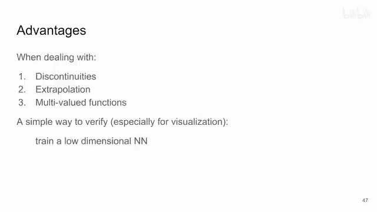
00:03:37–00:04:17 · 画面 009那么我们就来看相对于 explicit policy本文的 implicit policy它的一些优势它究竟强在了哪里呢？作者从这三个方面，就是面对数据有断点的情况，外推其实就是一种 out of distribution还有呢，multi-modalitymulti-value 这种情况下它们的表现的区别。那这里呢，作者用一个非常简单的方法来很直观的向我们展示了这个过程，那就是训一个那么这个网络呢，有一个很低的输出的维度，比如说一维或者两维。那这样子呢，你就可以很直接的把它的输出的结果可视化，做到一个图里面，这也是一个很常用的技巧，我们直接来看啊
00:04:17–00:04:28 · 画面 010
00:04:17–00:04:28 · 画面 010那么首先在这个样例里面，横轴呢是输入的值，你可以把它理解成这个 observation，纵轴呢是输出，你可以把它理解成 action。上面这三个图呢是 implicit policy，下面这三个图呢是 explicit policy。那这里我们来看到打叉的这些都是样本，蓝色的就是他们预测出来的结果，根据输入预测出来的输出的结果。然后呢这些背景颜色你看到对吧，蓝色的是这个 energy 比较低的地方，那么白色呢是比较高的地方
00:04:28–00:04:29 · 画面 011
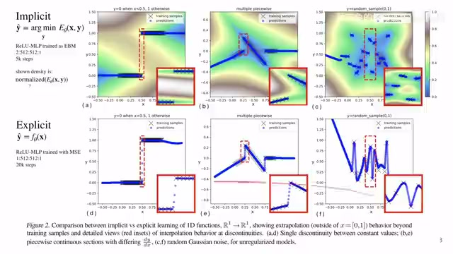
00:04:28–00:04:29 · 画面 01100:04:29–00:06:05 · 画面 012
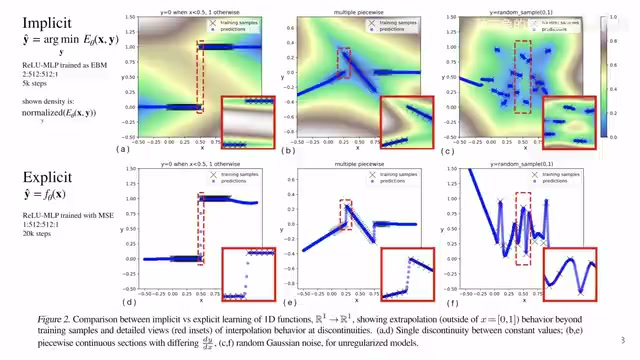
00:04:29–00:06:05 · 画面 012那我们注意看到中间这个断开的部分啊，这个断点的部分，中间明明没有数据对吧，我们的这个 implicit model 就知道啊，这里不应该有数据啊。但是呢，这个 implicit model 你想，它的实现就是各种线性层的叠加，一般你想它不连续的地方，比如 ReLU 很难正好就断在这个位置，所以你可以看到这里它会推测出一些不该有的样本。那么这个呢是数据不连续的情况那么这个例子里面也是一样对吧，这个位置它没有的数据，这边就生造出来一些数据。那么然后呢就是多值的情况，你可以看到这附近的这个样本对吧，它可以映射到很大的一个范围。你如果使用 explicit policy，它输出的是一个固定的这个轨迹就很别扭，但是你用本文的方法它就能给你一个更加合理的结果，不该有数据的地方就不要有。那么这个是一个很好的例子。那么当然你看到在没有样本的这些地方
本文的方法呢表现的也是更加合理一点，至少看上去对人类来讲更加合理一点。那么当然这个时候有聪明的朋友就说了我 explicit model 我也不一定说一定只映射到出一个值来对吧，你像 variational inference 里面我完全可以输出一个 distribution 对吧，我输出一个就是让我的网络假定输出一个 gaussian distribution，输出两个值，一个是它的 mean，一个是它的 standard deviation 对吧，完全可以这样，这个更确切来讲应该叫做 mixture density networks，就是比如说输出一个混合高斯模型
00:06:05–00:06:21 · 画面 013
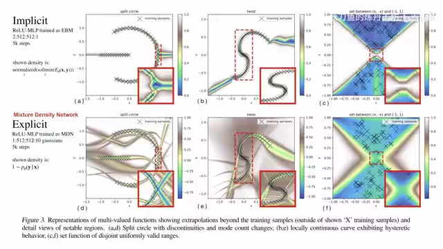
00:06:05–00:06:21 · 画面 013那么在这里你看到这个例子，作者也向我们展示了本文的方法比这个 10 个高斯 distribution 的这个 mixture 它的效果要更好一点。那么当然了，作者还做了这个更高维度的其实就是二维的这个实验来证明说本文的方法有很高的样本的效率
00:06:21–00:06:31 · 画面 014
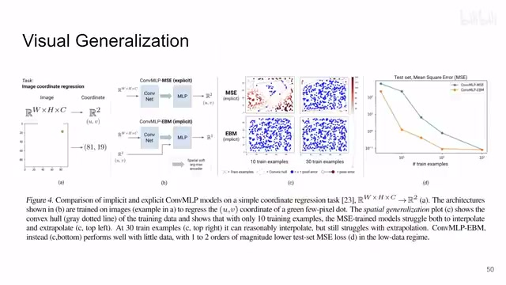
00:06:21–00:06:31 · 画面 014这都是一些很好的 toy examples。那么然后我们来看到一些结果啊，你看到这几个视频对吧，当时还都是让人很印象深刻的。那么感兴趣的朋友呢，你可以自己去到他的论文里面看他具体实验的配置。那么最后呢，作者也是做了更加理论的分析，那么有能力的朋友呢，你可以自己去到他的附录里面查看好的。那么以上就是我对这个文章的一个非常快速的一个整理啊，那么感谢您的收看，再见
00:06:31–00:06:35 · 画面 015
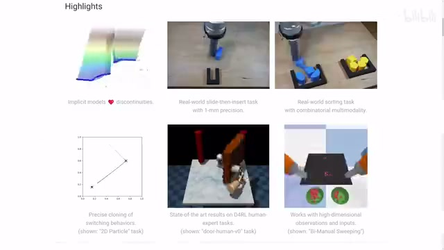
00:06:31–00:06:35 · 画面 01500:06:35–00:06:39 · 画面 016
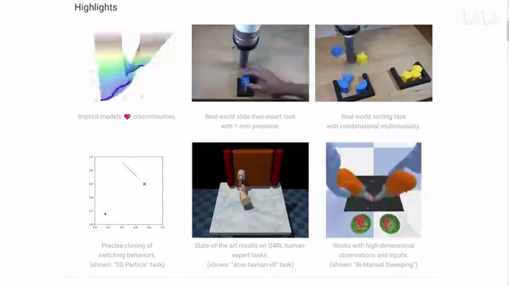
00:06:35–00:06:39 · 画面 01600:06:39–00:06:43 · 画面 017
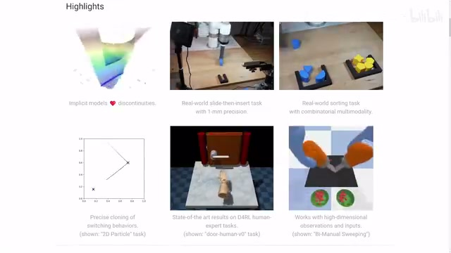
00:06:39–00:06:43 · 画面 01700:06:43–00:06:47 · 画面 018
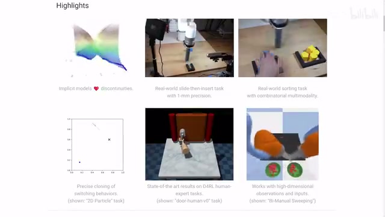
00:06:43–00:06:47 · 画面 01800:06:47–00:06:51 · 画面 019
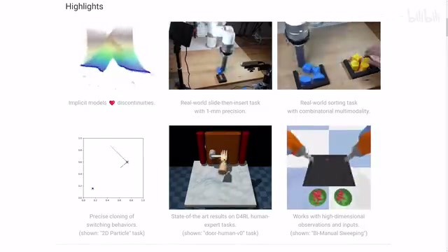
00:06:47–00:06:51 · 画面 01900:06:51–00:06:55 · 画面 020
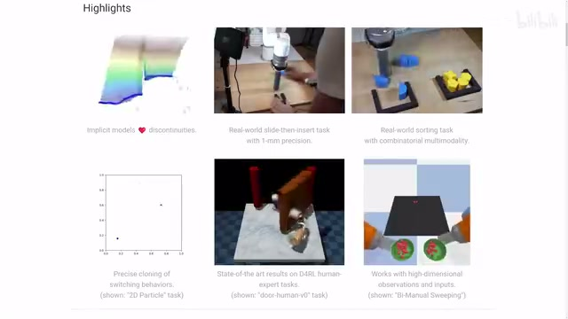
00:06:51–00:06:55 · 画面 02000:06:55–00:06:56 · 画面 021
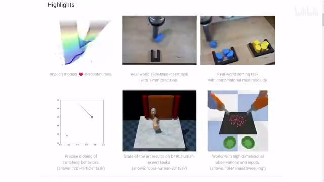
00:06:55–00:06:56 · 画面 02100:06:56–00:06:56 · 画面 022
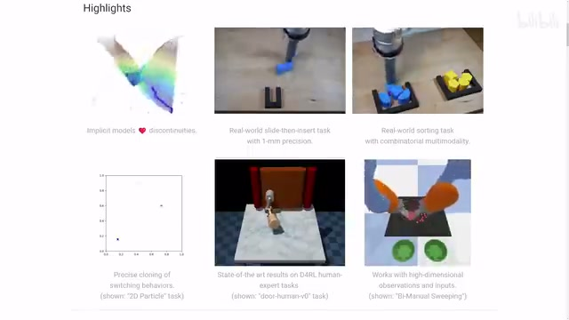
00:06:56–00:06:56 · 画面 022转写与来源说明 · 21 个自动复核提示
保留 62 个原始语音片段，21 个片段触发自动复核提示。提示仅用于定位可能的术语、重复或识别问题，不等于已确认错误。
讲解画面为源视频截图（640×360），不是可编辑 PPT 文件。全片按每秒 2 帧扫描内容变化，逐步展开页保留；连续动画保留代表画面。清晰度受源视频限制。
原视频：paper/合集_2026-10-16_机器人学/[论文速览]Implicit Behavioral Cloning IBC[2109.00137].mp4
SHA-256：98137d66ff236f791025c80c10acfeed9607f947c418a244d02879cd1af66a5e
采样出一些样本出来。
那这里写成 sample 的比较好。
你在这个范围里面。
随机的采出一些样本出来。
特有的毫无意义的采样出来的样本。
对吧
也作为 negative sample
那这样子呢
你就有了你的训练的机。
你按照 InfoNCE 的 loss 去训练就好了。
那么到 inference 的时候
你拿了这个 energy function
你就把它当成一个 loss。
去做 optimization
只不过呢
你的 observation 是固定的
你要去优化你的 action
来让这个 energy function
达到最小的一个值。
你的 action
implicit policy 做 inference
全文按视频语音与画面制作。原论文可从上方链接下载；完整资料包保留全文、原始逐字稿、字幕和校对记录。